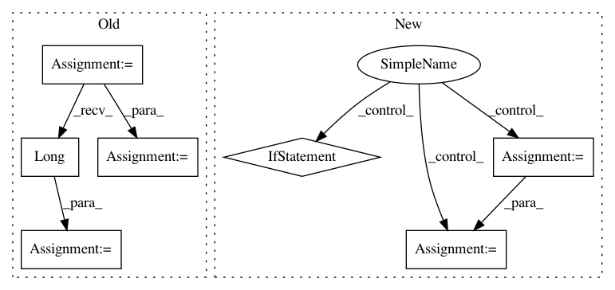

65c9a4857e41dcde4f5dae8a77e6cdf03953646a,model/model.py,RNNFeaturizer,forward,#RNNFeaturizer#Any#Any#,70
Before Change
if self.all_layers:
cell = torch.cat(cell, -1)
else:
cell = cell[-1]
// get last valid cell state
if seq_len is not None:
cell = cell[(seq_len-1).view(-1).contiguous(), torch.arange(cell.size(1)).long().cuda()]
else:
cell = cell[-1]
return cell
def state_dict(self, destination=None, prefix="", keep_vars=False):
sd = {}
After Change
self.rnn.detach_hidden()
if seq_len is None:
for i in range(input.size(0)):
emb = self.drop(self.encoder(input[i]))
_, hidden = self.rnn(emb.unsqueeze(0), collectHidden=True)
cell = self.get_cell_features(hidden)
else:
last_cell = 0
for i in range(input.size(0)):
emb = self.drop(self.encoder(input[i]))
_, hidden = self.rnn(emb.unsqueeze(0), collectHidden=True)
cell = self.get_cell_features(hidden)
if i > 0:
cell = get_valid_outs(i, seq_len, cell, last_cell)
last_cell = cell
return cell
def get_cell_features(self, hidden):
In pattern: SUPERPATTERN
Frequency: 3
Non-data size: 7
Instances
Project Name: NVIDIA/sentiment-discovery
Commit Name: 65c9a4857e41dcde4f5dae8a77e6cdf03953646a
Time: 2018-03-19
Author: raulp@dbcluster.nvidia.com
File Name: model/model.py
Class Name: RNNFeaturizer
Method Name: forward
Project Name: OpenNMT/OpenNMT-py
Commit Name: 9107c93764e8af783f08b4c8cb2252cd48dc8f32
Time: 2017-09-02
Author: bpeters@coli.uni-saarland.de
File Name: onmt/IO.py
Class Name: ONMTDataset
Method Name: __init__
Project Name: allenai/allennlp
Commit Name: 5d3828219d1afc9c6018a9f3779a7a7768ed7e15
Time: 2018-06-26
Author: markn@allenai.org
File Name: allennlp/models/semantic_role_labeler.py
Class Name: SemanticRoleLabeler
Method Name: forward